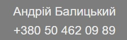
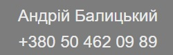

Інформація по членам правління
Нові Кандидати в члени правління
С першого дня проживання неефективне управління будинком і нераціональне використання коштів не залишали мене байдужим. Створення ОСББ бачилось єдиним дієвим механізмом навести лад та максимально покращити життя в нашій спільній оселі. Згодом, бажання особисто впливати на прийняття рішень, пов’язаних з життєдіяльністю нашого будинку сформувалось у конкретну мету, а саме - стати членом правління. Освіта - технічна. 38 років.
Голова Правління
Вадим - керуючий партнер компанії "Проджект Білдінг", що розташована на Гарматній 38А, є досвідченим керівником, спроможним взяти на себе роль голови правління ОСББ. Його перший досвід з організацією та керуванням ОСББ в першому будинку як член правління, демонструє його здатність до результативного лідерства. Після переїзду в другий будинок, де ОСББ відсутнє, Вадим помітив значні можливості для поліпшення управління та експлуатації через створення ОСББ. Він має практичний досвід керування невеликим будинком, де він успішно покращив ефективність процесів та знизив витрати, що свідчить про його кваліфікацію для керівної ролі. Вадим обіцяє працювати на громадських засадах і має міцне бажання зміцнити команду і створити ОСББ. Він підкреслює важливість прозорості та колегіальності в управлінні, стверджуючи, що всі рішення мають прийматися шляхом голосування. Завдяки своєму досвіду та навичкам, Вадим є потенційно чудовим кандидатом для голови ОСББ. Він готовий прийняти на себе цю важливу роль і переконаний у своїх можливостях внести позитивні зміни в управління будинком та забезпечити його ефективну експлуатацію.
Нажміть тут щоб подивитись відео виступу ВадимаЧлени правління
 

Андрій є відданим та активним членом нашого співтовариства, який докладає зусилля щоб наш будинок був максимально комфортним і функціональним для життя. З самого початку він брав активну участь у формуванні нашої спільноти. Він – ключовий засновник та ініціатор Телеграм-чату мешканців «ЖК Козацький 2». Кілька років тому Андрій разом з Іваном був одним з перших, хто запропонував створити ОСББ, демонструючи свою проактивну позицію та високий рівень відповідальності по відношенню до будинку і спільноти. Нажаль, створити тоді ОСББ не вдалось. Андрій не просто створює ідеї, а також реалізує їх. Так, він взяв на себе відповідальність зібрати колектив однодумців, яким не байдуже майбутнє будинку. Він особисто зв'язувався з кожним мешканцем, сприяючи формуванню ініціативної групи, яка сьогодні активно працює над покращенням нашого житлового комплексу. Досвід, набутий Андрієм, його проактивність та вміння працювати в команді, роблять його ідеальним кандидатом на посаду члена правління.
Іван - програміст, працює в IT-сфері вже понад 22 роки, має великий досвід співпраці з українськими та іноземними компаніями та індивідуальними клієнтами. Він активний член нашої спільноти, який завжди готовий взяти на себе відповідальність та внести вклад у спільні справи. Своєю участю в обговореннях та активним підходом до рішення будинкових питань, Іван продемонстрував своє бажання покращувати життя спільноти. Його незмінна присутність на зборах співвласників та участь у прийнятті важливих рішень свідчать про його велику зосередженість та бажання служити інтересам спільноти. У 2021 році Іван був одним із людей, які ініціювали та провели загальні збори з питання переходу на прямі договори з опалення, після того, як він та група інших співвласників виявили великі борги керуючої компанії, через яку на той момент йшли платежі за опалення, перед постачальником послуги опалення. А в минулому році, коли ми збирали кошти на генератор, Іван також підтримав цю ініціативу та зробив один з найбільших грошових внесків, підтвердивши свою готовність допомагати спільноті в разі потреби.
Олексій , кандидат в члени правління ОСББ, обіцяє привнести в роботу громади прозорість, відкритість та відповідальність. Він наголошує на важливості звітності та контролю за витратами, що підтверджує його стремління до ефективного управління. З досвіду роботи в батьківському комітеті школи він знає, наскільки важливо бути ініціативним та відповідальним. Його бажання внести вклад у розвиток дому підкреслює його відання: "Якщо не я, то хто?" Олексій пронизливо ставиться до майбутнього спільного дому, що підтверджується його активністю у різних ініціативах, включаючи допомогу у час війни. Його готовність брати на себе обов'язки підтверджується досвідом упровадження різноманітних технологій для поліпшення життя в домі. Він також має досвід у роботі з автоматизацією, який планує використати для вдосконалення управління будинком. Ці якості та досвід роблять Олексія сильним кандидатом для ролі в правлінні ОСББ.
Нажміть тут щоб подивитись відео виступу ОлексіяМешканець з 2021 року. Керівник маркетингової компанії. Людина, якій не байдуже, куди йдуть його кошти і яка прагне перебувати в оточенні чистоти, охайності. Готовий брати на себе відповідальність в межах дозволених при набутті статусу члена правління. 34 роки

Олексій ефективний керівник і глибоко відданий член нашого житлового комплексу. На посаді Програмного Менеджера в ІТ компанії, він успішно керує командою з більше ніж 100 спеціалістів, що свідчить про його високий рівень лідерства та організаційних здібностей. Важливим чинником, який відрізняє Олексія, є його ініціативність та бажання допомогти. Під час вимкнень світла минулого року він активно вступив до розв'язання проблеми, придбавши генератор для покращення ситуації в будинку. Він не просто вирішив проблему, але й зібрався з ініціативною групою для збору коштів на додаткове обладнання. За кілька місяців ця колективна робота привела до придбання інвертора та аккумулятора, які були встановлені в приміщенні управління будинком для забезпечення безперебійного освітлення у підвалі та охоронному приміщенні. Це демонструє, що Олексій здатний до злагодженої роботи з командою та здатний забезпечити реальні позитивні зміни. Олексій заслуговує на ваший розгляд для членства в правлінні, оскільки він проявив себе як особа, що може вести, ініціювати, та допомагати спільноті в реалізації важливих ініціатив
Антон - це висококваліфікований спеціаліст в галузі проектування мереж електропостачання, володіючи значним професійним досвідом та позитивною репутацією. Його ефективність, заснована на навичках та досвіді, забезпечує надійність та інноваційність в кожному його проекті. Антон відіграв вирішальну роль у проектуванні нашого будівництва, виказавши при цьому відмінні лідерські якості, здатність до командної роботи та глибоке розуміння бізнес-потреб. Його неперевершене прагнення до вдосконалення та постійне прагнення до навчання відрізняють його серед інших. Ми впевнені, що його професіоналізм, досвід та відданість його роботі зроблять його незамінним членом нашого правління.
Катерина є досвідченим керівником, працюючи на посаді керівника середньої ланки в державній установі. Вона відповідальна за науково-дослідну роботу та володіє значними навиками управління та координації. Але не лише професійні навики роблять Катерину відмінним кандидатом. Вона є власницею квартири в нашому будинку і з самого початку свого перебування тут вона активно долучилась до життя спільноти. Завдяки її усерединеній та енергійній праці разом з небайдужими мешканцями змогли добитися перерахунку плати за ненадані послуги. Катерина прагне не лише покращити якість обслуговування для мешканців будинку, але й працювати на те щоб забезпечити ефективне та прозоре використання цільових коштів. Вона вірить що правильне управління та стратегічне планування можуть розвивати наш будинок, покращуючи його на користь усіх мешканців. Віримо що з її досвідом та навичками Катерина буде відмінним додатком до нашого правління.
Кандидати на посаду членів ревізійної комісії
Юлія є енергійним професіоналом у сфері зовнішньоекономічної діяльності (ЗЕД) та логістики. Вона виявила сильний інтерес до активної участі в житті своєї громади, особливо у роботі ревізійної комісії. Юлія прагне працювати за прозорістю та відкритістю у використанні коштів, спрямованих на благоустрій будинку. Вона критично ставиться до обслуговуючих компаній, які не надають власникам квартир чіткого розуміння щодо використання їхніх коштів, а також не забезпечують достатньої прозорості своєї діяльності. При висуненні своєї кандидатури Юлія демонструє свою готовність до активного діалогу та збудови ефективних відносин між членами громади, ревізійною комісією та обслуговуючими компаніями. Це свідчить про її відданість цілям спільноти, її вміння відстоювати свої погляди та бажання знайти оптимальні рішення для усіх сторін.